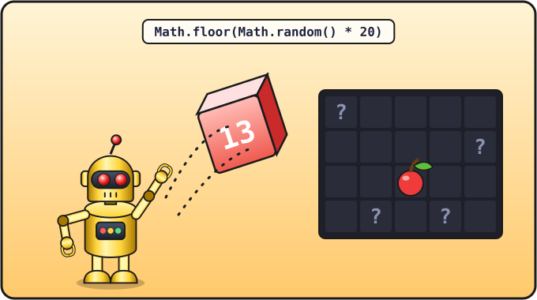

Урок 11 из 16 ⏱ 50 минут
Яблоко и рост
Змейка проползает сквозь яблоко и даже не замечает его. Научим её есть! Съела яблоко — выросла на один кусочек, получила очко, а новое яблоко появилось в случайном месте.
- получишь случайные числа с помощью
Math.randomиMath.floor; - напишешь функцию, которая возвращает ответ (
return); - научишь змейку есть и расти;
- выведешь счёт на страницу.
| 10 мин | Случайные числа в консоли |
| 10 мин | Функция randomCell и return |
| 15 мин | Змейка ест и растёт |
| 15 мин | Счёт на странице, играем, задания |

Math.floor(Math.random() * 20) — как кубик с двадцатью гранями: выпадает любое целое число от 0 до 19, и яблоко появляется в случайной клетке.Случайные числа
Открой консоль и несколько раз введи:
Math.random()
Каждый раз получается новое дробное число от 0 до 1 (но никогда не ровно 1): 0.7364…, 0.0912…. Math — это встроенный в JavaScript набор математических команд, а random значит «случайный».
А нам нужна клеточка от 0 до 19. Сделаем это в два шага:
Math.random() * 20— случайное число от 0 до 19.999…;Math.floor(...)— отбросить дробную часть (floor — «пол»: округлить вниз). Из 13.82 получится 13.
Math.floor(Math.random() * 20)
Повтори это в консоли много раз: будут выпадать целые числа от 0 до 19, как на кубике с двадцатью гранями.
Функция, которая отвечает
Наши функции до сих пор что-то делали: рисовали, двигали. А бывают функции, которые отвечают, то есть возвращают результат. Для этого есть слово return («вернуть»):
function randomCell() {
return Math.floor(Math.random() * cells);
}
Теперь randomCell() можно писать везде, где нужно случайное число: apple.x = randomCell(); — и в apple.x попадёт ответ функции. Так же, как prompt возвращал то, что ввёл человек.
Змейка ест
Как понять, что змейка съела яблоко? Её новая голова оказалась на той же клеточке, что и яблоко: совпадают и x, и y.
if (head.x === apple.x && head.y === apple.y) {
А теперь хитрость. Помнишь эксперимент из урока 8, когда мы убирали snake.pop() и змейка росла? Так и сделаем: если змейка съела яблоко, не убираем хвост. Голова добавилась, хвост остался, и змейка стала на кусочек длиннее!
Меняем программу
1. В HTML, между заголовком и холстом, добавь строку со счётом:
<h1>Змейка</h1> <p>Счёт: <span id="score">0</span></p> <canvas id="game" width="400" height="400"></canvas>
<p> — абзац, а <span> — кусочек текста внутри него. Мы дали ему имя id="score", чтобы найти его из JavaScript и менять число.
2. Добавь переменную для счёта после dx и dy:
let dx = 1; let dy = 0; let score = 0;
3. Добавь функцию randomCell после drawCell:
function randomCell() {
return Math.floor(Math.random() * cells);
}
4. В функции step замени строчку snake.pop(); на проверку:
snake.unshift(head);
snake.pop();
if (head.x === apple.x && head.y === apple.y) {
score = score + 1;
document.getElementById("score").textContent = score;
apple.x = randomCell();
apple.y = randomCell();
} else {
snake.pop();
}
draw();
}
Прочитаем по-русски: «Если голова на яблоке — прибавить очко, показать его на странице, переложить яблоко в случайное место. Иначе — убрать хвост».
document.getElementById("score") находит на странице наш <span>, а .textContent = score меняет текст внутри него на новое число.
Сохрани, обнови и попробуй поймать яблоко! 🍎
console.log, например console.log("Съела! Счёт: " + score); внутрь if. Так видно, срабатывает ли условие. Когда разберёшься, удали эту строчку.
- Сыграй и набери 10 очков. Какой длины стала змейка?
- Пусть в начале игры яблоко тоже лежит в случайном месте. Подсказка: вызови
randomCell()в самом начале, при созданииapple. Нужно ли переставить что-то в программе, чтобы функция уже была известна? (Проверь — JavaScript знает функции заранее, ещё до их строчки.) - Сделай, чтобы за яблоко давали 10 очков, а не 1.
- ⭐ Иногда яблоко появляется прямо внутри змейки. Замечаешь? Подумай, как это исправить. Мы сделаем это в уроке 13.
📄 Весь файл snake.html после этого урока
<!DOCTYPE html>
<html>
<head>
<meta charset="utf-8">
<title>Змейка</title>
</head>
<body>
<h1>Змейка</h1>
<p>Счёт: <span id="score">0</span></p>
<canvas id="game" width="400" height="400"></canvas>
<script>
let canvas = document.getElementById("game");
let ctx = canvas.getContext("2d");
let size = 20;
let cells = 20;
let snake = [
{ x: 10, y: 10 },
{ x: 9, y: 10 },
{ x: 8, y: 10 }
];
let apple = { x: 15, y: 10 };
let dx = 1;
let dy = 0;
let score = 0;
function clearField() {
ctx.fillStyle = "black";
ctx.fillRect(0, 0, 400, 400);
}
function drawCell(x, y, color) {
ctx.fillStyle = color;
ctx.fillRect(x * size, y * size, size - 1, size - 1);
}
function randomCell() {
return Math.floor(Math.random() * cells);
}
function draw() {
clearField();
drawCell(apple.x, apple.y, "red");
for (let i = 0; i < snake.length; i++) {
drawCell(snake[i].x, snake[i].y, "lime");
}
drawCell(snake[0].x, snake[0].y, "yellow");
}
function step() {
let head = { x: snake[0].x + dx, y: snake[0].y + dy };
if (head.x >= cells) {
head.x = 0;
}
if (head.x < 0) {
head.x = cells - 1;
}
if (head.y >= cells) {
head.y = 0;
}
if (head.y < 0) {
head.y = cells - 1;
}
snake.unshift(head);
if (head.x === apple.x && head.y === apple.y) {
score = score + 1;
document.getElementById("score").textContent = score;
apple.x = randomCell();
apple.y = randomCell();
} else {
snake.pop();
}
draw();
}
function onKey(event) {
if (event.key === "ArrowUp" && dy !== 1) {
dx = 0;
dy = -1;
}
if (event.key === "ArrowDown" && dy !== -1) {
dx = 0;
dy = 1;
}
if (event.key === "ArrowLeft" && dx !== 1) {
dx = -1;
dy = 0;
}
if (event.key === "ArrowRight" && dx !== -1) {
dx = 1;
dy = 0;
}
}
document.addEventListener("keydown", onKey);
draw();
setInterval(step, 200);
</script>
</body>
</html>
Проверь себя
- Я умею получить случайное число от 0 до 19.
- Я знаю, что делает
return. - Я могу объяснить, почему змейка растёт, когда мы не вызываем
pop.